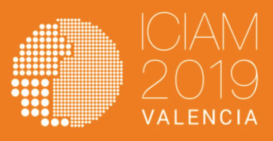

Amir Fernández Ouaridi
Universidad de Málaga
Francisco Ortegón Gallego
Universidad de Cádiz
_______________
Entre los días 11 y 14 de diciembre de 2018 se celebró, en la Universidad de Cádiz, el II Congreso Conjunto España-Brasil de Matemáticas, una reunión conjunta de la Sociedade Brasileira de Matemática, SBM, la Sociedade Brasileira de Matemática Aplicada e Computacional, SBMAC, la Sociedad Española de Matemática Aplicada, SEMA y la Real Sociedad Matemática Española, RSME, cuyo principal objetivo es estrechar aún más los lazos científicos entre la comunidad matemática brasileña y la española. Se trata de la segunda edición, tras el éxito de la primera celebrada en la ciudad brasileña de Fortaleza a finales de 2015, y de la que esperamos sea una larga tradición de congresos conjuntos entre las comunidades matemáticas española y brasileña que se celebren de forma alternativa en uno y otro país.
El encuentro reunió a un total de 319 matemáticos de Francia, Italia, Bélgica, Alemania, Dinamarca, Finlandia, China, Estados Unidos, Brasil y España. Las comunidades más representadas fueron la española, con 188 participantes, y la brasileña, con 97 participantes.
La información general sobre el congreso puede encontrarse en el magnífico cartel del encuentro (figura 3), en cuyo fondo se puede admirar el dibujo del diseñador creativo Jesús Rubio titulado Gran cartel monumental de la Ciudad de Cádiz para la conmemoración del II Centenario de la Constitución de 1812 «La Pepa».
Como se puede observar en el cartel, este congreso está encuadrado dentro de las actividades satélite del International Congress on Industrial and Applied Mathematics 2019, ICIAM2019, que se celebrará en el Campus de Blasco Ibáñez de la Universidad de Valencia entre los días 15 y 19 de julio de 2019, un evento singular y difícilmente repetible, cuyo éxito contribuirá a que la sociedad tome conciencia del esfuerzo realizado desde nuestra comunidad por conectar las matemáticas con todo tipo de aplicaciones.
El encuentro estuvo patrocinado por el Vicerrectorado de Infraestructuras y Patrimonio de la Universidad de Cádiz, UCA, la Facultad de Filosofía y Letras de la UCA, Vicerrectorado de Investigación de la UCA, el Departamento de Matemáticas de la UCA, la Delegación Municipal de Turismo del Ayuntamiento de Cádiz, la editorial global Springer, además de la SEMA y la RSME.
Como es habitual en esta época del año en la ciudad gaditana, el viento estuvo presente, junto a él, una bajada de las temperaturas tanto máximas como mínimas a lo largo de la semana, culminando con precipitaciones de intensidad débil a partir del viernes, nos recordaban que se acercaba el invierno. Sin embargo, el clima invernal no enfrió la calidez humana de los presentes: la extraordinaria hospitalidad de la organización propició un ambiente cordial y afable durante el transcurso del encuentro. El ambiente acogedor junto al excelente nivel científico hicieron de este encuentro todo un éxito.
El encuentro contó con ocho conferencias plenarias, veintidós sesiones especiales, dos sesiones de pósteres y una mesa redonda titulada Pero ¿quién quiere emplear a un matemático?
El acto de apertura, celebrado el día 11 a las 9:00 en el Aula Magna de la Facultad de Filosofía y Letras de la UCA, estuvo presidido por Francisco Marcellán Español, presidente de la RSME; Francisco Ortegón Gallego, miembro del comité organizador; Paulo Fernando de Arruda Mancera, en representación de la SBMAC; Rosa María Donat Beneito, presidenta de la SEMA; Teresa García Valderrama, vicerrectora de Responsabilidad Social, Extensión Cultural y Servicios, y Paolo Piccione, presidente de la SBM (figura 4).
Figura 4
La vicerrectora Teresa García Valderrama, UCA, preside la sesión de apertura. De
izquierda a derecha, Francisco Ortegón Gallego, comité organizador, UCA; Paolo
Piccione, SBM y USP; Teresa García Valderrama, UCA; Francisco Marcellán
Español, RSME y UC3M; Rosa María Donat Beneito, SEMA y UV; y Paulo F. A.
Mancera, SBMAC y UNESP. Foto de J. R. Rodríguez Galván.
En él se habló de los estrechos lazos que unen a las comunidades científicas brasileña y española, siendo este encuentro conjunto, organizado por las sociedades matemáticas de sendos países, una muestra más de la fuerza de los mismos. También se reconoció el buen trabajo por parte de las instituciones de ambos países para facilitar este vínculo, por ejemplo mediante los programas de intercambio como Ciência sem fronteiras, promovido por el gobierno brasileño, en el que han participado numerosos científicos españoles, alguno de los cuales no quisieron perderse la ocasión. Además de los vínculos históricos, culturales e idiomáticos que justifican la idoneidad de Cádiz, que fue uno de los principales puertos marítimos de enlace con Las Américas, como lugar de celebración del congreso.

Figura 5
Los ocho conferenciantes plenarios. De arriba abajo y de izquierda a derecha, Sandra
Augusta Santos, Enrique Fernández Cara, Miguel Ángel Javaloyes, Luis Gustavo
Nonato, Pavel Shumyatsky, Rosa María Miró-Roig, Henrique Bursztyn y Rosana
Rodríguez López. Fotos de FOG.
Las conferencias plenarias, celebradas en el Aula Magna de la Facultad de Filosofía y Letras, con las que contó el encuentro fueron:
Junto a las conferencias plenarias, se organizaron sesiones especiales que cubrieron una amplia gama de temáticas. Estas tenían una duración de unas seis horas y estaban compuestas por entre nueve y doce conferencias que se celebraron en el Edificio Constitución 1812. Las sesiones especiales y sus respectivos organizadores fueron:
Además, el encuentro contó con dos sesiones de pósteres los días 12 y 14, respectivamente, que fueron expuestos en el patio del Edificio Constitución 1812, Universidad de Cádiz.
El jueves 13 se celebró la mesa redonda Pero ¿quién quiere emplear a un matemático?, cuya moderadora fue María Victoria Otero Espinar, presidenta de la Comisión Profesional de la RSME y vicerrectora de Titulaciones de la Universidad de Santiago de Compostela. Junto a ella, intervinieron Macarena Estévez Muñoz, directora y fundadora de Conento y vocal de la Junta de Gobierno de la RSME; Francisco Javier García Pacheco, director de Secretariado de Proyectos Internacionales de la UCA; Tomás Chacón Rebollo, exdirector del Instituto de Matemáticas Universidad de Sevilla, IMUS, y presidente de la Red Estratégica de Matemáticas; Luis Gustavo Nonato, de la Universidade de São Paulo (Brasil), y Sandra Augusta Santos, de la Universidade Estadual de Campinas (Brasil), además de los asistentes al auditorio. En ella, se discutieron temas de actualidad como la empleabilidad del graduado en Matemáticas, las Matemáticas frente al machine learning o la falta de matemáticos que por vocación se meten en la enseñanza.
A continuación reproducimos la transcripción completa de esta muy interesante mesa redonda.
Figura 7
M.a V. Otero Espinar.3
María Victoria Otero Espinar: «Dicen que los matemáticos estamos de moda. A mí, esto, no me gusta mucho, porque parece que esto conlleva, desde mi punto de vista, que es como algo pasajero. Y esto no me gusta especialmente, porque las Matemáticas, como disciplina, y los matemáticos, siempre hemos estado aquí. Eso sí, muchas veces, y tomo prestado el título de una película, como Figuras ocultas. Sí es cierto que, aunque esto ocurre, tanto en la profesión de matemático como en la percepción que la sociedad tiene de los mismos, parece que se está redefiniendo continuamente.
En la actualidad, los matemáticos se reconocen como esenciales e indispensables para abordar los principales desafíos de la ciencia, la tecnología y la sociedad. Son muchos los factores que contribuyen a esto. No me cabe duda de que entre ellos, como uno de los factores fundamentales, está el gran esfuerzo colectivo que ha realizado la comunidad matemática, con una buena visión y una muy buena planificación de su trabajo.
Los matemáticos han estado activos para crear conciencias de la función innovadora de las Matemáticas, como instrumento que se usa para poder avanzar en cualquier área del conocimiento, y formando parte de la investigación en cualquier disciplina. Pero también creando campos matemáticos nuevos y emergentes, que junto a las nuevas posibilidades de implantación de las Matemáticas ya existentes, actúan en beneficio de la ciencia y la innovación. Por poner un ejemplo, cada vez, con más frecuencia, las empresas buscan a matemáticos que resuelvan sus problemas y retos, perciben que las Matemáticas aportan innovación y generan un valor añadido al tejido productivo. Y esto es debido a la existencia de una investigación especializada, en definir y desarrollar nuevos métodos y técnicas matemáticas, o bien en aplicar las existentes con el objetivo de mejorar la eficiencia y la productividad de las empresas. Esta implicación ha tenido como consecuencia la existencia de nuevas salidas profesionales para los matemáticos.
La demanda creciente de matemáticos en distintos ámbitos provoca, hoy en día, un grave problema de falta de profesorado de Secundaria (por ejemplo, en las oposiciones convocadas en este año, han quedado desiertas trescientas plazas de docentes en Matemáticas).
También provoca que muchísimos estudiantes elijan nuestras titulaciones y que las notas de entrada en las universidades sean, precisamente, las más altas en las titulaciones de Matemáticas o en las dobles titulaciones en las que una de las partes es Matemáticas.
Figura 8
Presentación de la mesa redonda Pero ¿quién quiere emplear a un matemático? De izquierda
a derecha, Luis Gustavo Nonato, USP; Sandra Augusta Santos, UNICAMP; Francisco
Javier García Pacheco, UCA; María Victoria Otero Espinar, USC y RSME,
moderadora; Tomás Chacón Rebollo, US e IMUS; Macarena Estévez Muñoz,
Conento y RSME. Foto de FOG.
Pero también la población activa en España con formación en Matemáticas o Estadística, ha registrado un aumento muy significativo en los últimos años, casi doblando las 71.000 personas en 2010, a las 121.000 que contabiliza la Encuesta de Población Activa de 2015. En la actualidad, las Matemáticas y la Estadística se han consolidado como el sector profesional con mayor tasa de empleo en España, rozando el 80 %, y con la menor tasa de paro, rozando el 8 %.
Para hablar de esto, y de otras muchas cosas, me acompañan en esta mesa, que he titulado Pero ¿quién quiere emplear a un matemático?, Tomás Chacón Rebollo, catedrático de Análisis Matemático, especialista en análisis numérico y modelización matemática, especialmente en Mecánica de Fluidos, persona del mundo académico, que hace transferencia, y que ha creado la Unidad de Transferencia del Instituto de Matemáticas de la Universidad de Sevilla cuando era su director, y actualmente coordina la Red Estratégica de Matemáticas, creada en 2017, que fomenta la divulgación y la transferencia de tecnología matemática, orientada a la I+D, hacia las necesidades que puedan tener empresas, industrias, administraciones públicas, y creando sinergias entre la comunidad científica y el impacto social y económico de las Matemáticas.
También está con nosotros Macarena Estévez, que es CEO y fundadora de la empresa Conento y, actualmente, es vocal también de la Junta de Gobierno de la Real Sociedad Matemática Española. Conento es una firma española líder en consultoría analítica y en la aplicación de modelos matemáticos a la toma de decisiones estratégicas de negocio, mostrando los beneficios que la implantación de modelos matemáticos pueden tener en el proceso diario de toma de decisiones estratégicas.
También está con nosotros Francisco Javier García Pacheco, que es profesor titular de universidad del Departamento de Matemáticas de la Universidad de Cádiz, y actualmente es director de Secretariado de Proyectos Internacionales de la Universidad de Cádiz, que depende del Vicerrectorado de Transferencia e Innovación Tecnológica encargado de conectar las empresas y organizaciones empresariales con la Universidad de Cádiz.
Y, por último, tengo a dos representantes de las sociedades brasileñas: de la Sociedad Brasileña de Matemática Aplicada y Computacional y de la Sociedad Brasileña de Matemáticas. Luis Gustavo Nonato, que es profesor de la Universidad de São Paulo, y actualmente trabaja en el Instituto de Matemáticas y Ciencias de la Computación en la Universidad de São Carlos. Luis, que ya nos ha dado una de las conferencias plenarias, investiga en Ciencia de los Datos y en visualización y procesado geométrico. Y Sandra Augusta Santos, que actualmente trabaja en el Departamento de Matemática Aplicada de la Universidad de Campinas e investiga en métodos computacionales en optimización.
Le voy a ceder la palabra a Macarena para que comience su intervención.»
Figura 9
M. Estévez Muñoz.4
Macarena Estévez Muñoz: «Voy a intentar ser breve. Quizá lo más interesante de la mesa redonda sería que hubiera un poquito de debate, y también que por vuestra parte pudiérais participar. Yo me he preparado una presentación, porque os quiero contar tres cosas.
Primero, ¿quién quiere contratar a un matemático? Yo. Fijaos, Conento es una empresa pequeña, es una pyme: somos cincuenta empleados, la mayoría de los chicos y chicas son matemáticos. Es una empresa joven. Yo la fundé en el año 2007. Pues esos son los clientes para los que nosotros hemos trabajado (figura 10). Y todo esos clientes están interesados, no solamente en trabajar con una empresa como Conento, sino en trabajar y tener en sus equipos cada vez más a matemáticos. Eso es lo primero que os quería contar.
Lo segundo que os quería contar es, un poco, muy breve, el tipo de cosas que nosotros hacemos. Como Conento nace con la filosofía de ser una empresa de matemática aplicada, cuando la gente nos preguntaba qué hacéis, pues nosotros hacemos de todo; porque si tú tienes un problema de un tipo, pues nosotros vamos a intentar con la matemática resolver ese problema; y si tienes un problema de otro tipo, pues vamos a coger otra técnica o metodología matemática para resolver ese problema. Cuando presentábamos Conento de esta manera, la gente se volvía un poco loca, y nadie tenía claro qué era lo que nosotros realmente hacíamos. Entonces lo que hicimos fue crear esa matriz, y lo que nosotros decimos en el mercado, porque normalmente nosotros hablamos con directores de Márketing de esas empresas, con el director de Márketing de Heineken, de Ford, de Pascual, o con el director de Compras, o el director financiero, que son personas que no están muy cerca de las Matemáticas. Hay que intentar transmitirles el conocimiento, y lo que nosotros vendemos, para que ellos lo entiendan. Entonces, hicimos esta matriz y lo que nosotros hacemos depende del tipo de datos que manejamos, que puede ser datos normales o estructuras de datos más complejas, en entornos Big Data, y luego, el eje vertical, nosotros lo que decimos es que, viene a ser un poco, el porcentaje de ser humano que hay en la técnica. Entonces, nosotros pues, podemos hacer cosas sencillas, por ejemplo, Telefónica invierte doscientos millones al año en publicidad, y una empresa como Conento le resuelve un problema de optimización para decirle cómo tiene que distribuir ese dinero entre los distintos medios y canales para maximizar las ventas. Otro ejemplo, Dentix está abriendo unas cien clínicas al año en España; pues nosotros le decimos dónde tiene que abrir cada una de las clínicas para también maximizar las ventas. O, por ejemplo, a veces también hacemos problemas como qué es lo mínimo que me tengo que gastar para conseguir el máximo número de unidades vendidas.
O sea, son problemas de ese estilo. No son problemas muy complejos, pero sí que, mi mensaje para vosotros es que hay dos tipos de Matemática Aplicada: la Matemática Aplicada a la Industria, que es Matemática bastante heavy, y luego lo que nosotros trabajamos en Conento, no es que no sea heavy, yo creo que no es heavy porque no tenemos matemáticos muy heavies, pero yo creo que lo que nosotros resolvemos, hay una cosa que ahora tiene mucha demanda que es todo lo que es la publicidad programática, que es cuando vosotros navegáis por Internet, pues según cómo estéis navegando, vais a ir a diferentes páginas web, y ahí os va a aparecer diferente publicidad. Eso es lo que se denomina publicidad programática, y ahí se están aplicando muchísimas técnicas matemáticas, pero sobre todo hacia la parte de Estadística. Yo creo que hay matemática de otro estilo que podría realmente dar soluciones mejores. Y son cosas que interesan mucho a las empresas, porque lo que las empresas tienen detrás es mucho riesgo de dinero. En márketing hay muchísimo dinero, y en la medida en que con las matemáticas les ayudemos a usar mejor las cosas y ganar más dinero, las empresas van a pagar un montón.
También os quería contar que nosotros tenemos varios partners. Para veais un poco: Google y Facebook, las dos compañías, en el año 2008, decidieron que ellos iban a utilizar modelos para medir cómo de eficaces eran sus canales. Pero en vez de hacer ellos esa medición, para no ser juez y parte, contrataron una empresa como Conento. Entonces, a nosotros nos han elegido como partner global, tanto Google como Facebook. Esto os lo cuento para que veáis que una empresa pequeñita matemática, pues para empresas como Google o Facebook, pues somos una empresa que hacemos muy bien las cosas.
Y mi último mensaje es para abrir debate con vosotros. Hace un tiempo que llevo pensando mucho en esto. Le he puesto un nombre a los dos tipos de individuos que hay ahora mismo en las empresas haciendo análisis: estamos los thinkers, yo me considero una thinker, y los artificials. He creado una página web, hace muy poco, la semana pasada, que se llama thinkerartificial.com, donde quiero que la gente vote si se considera thinker o artificial, y si quiere poner un comentario, pues que lo ponga.
¿Por qué os digo esto? ¿Quiénes son los artificials? Los artificials no son (en su mayoría) matemáticos. Son todas esas personas que han hecho otro tipo de carrera, y que con técnicas de machine-learning o técnicas automáticas, resuelven problemas complejos, pero no les importan cómo los resuelven, sino que la máquina los resuelve por ellos. Los artificials consideran que los thinkers somos unos pesados. Y además, lo que nosotros hacemos lleva tiempo, mientras que lo que hacen ellos, lo hacen en un pis-pas. Entonces, ahí os lo dejo, y luego si nos da tiempo, me contáis si tenemos algún artificial en la sala.»
María Victoria Otero Espinar: «Muchas gracias Macarena. Pues le cedo la palabra a Tomás para que nos haga su intervención.»
Figura 11
T. Chacón Rebollo.5
Tomás Chacón Rebollo: «Muy bien, muchas gracias. Bueno, a mí me gustaría centrar mi intervención en dos aspectos. Por una parte, hacer un pequeño diagnóstico en cuanto a cuál es la empleabilidad y la capacidad de los matemáticos y la Matemática. Y luego recorrer unas cuantas cuestiones que yo considero asignaturas pendientes en las que deberíamos trabajar.
Por una parte, ya lo he comentado, creo que estamos todos muy de acuerdo, el matemático como recurso humano proporciona una serie de capacidades que cada vez tiene más valor en la sociedad tecnológica de hoy en día. El empleo en Matemáticas es muy reducido: en docencia ya tenemos de hecho un déficit importante, de manera que, afortunadamente, las Matemáticas, hoy por hoy, realmente son de gran importancia para el sector productivo, la enseñanza en general. Y lo interesante también es que cada vez hay una conciencia social más grande sobre ello. Cuando yo era estudiante, los matemáticos seguíamos siendo una especie de bichos raros, ratones de biblioteca, gente que estaba pensando en cosas completamente alejadas del mundo real. Y ahora cada vez más, pues la banca, las empresas de tecnología, comunicación, informática, análisis de datos, en fin cada vez piden más matemáticos necesariamente. Comentamos con el director de AFI, Emilio Ontiveros, que su empresa tiene aproximadamente un veinticinco por ciento de matemáticos, siendo una empresa de análisis financiero. O sea, tiene una importancia muy grande. Al igual que Conento, la empresa de Macarena, donde también tiene muchísima importancia.
Poco a poco, la formación se va orientando a formar estudiantes que manejen disciplinas combinadas, los dobles grados en Física-Matemática, Informática-Matemática, Finanzas-Matemática, porque claro cada vez tienen más importancia para todas estas empresas que estoy comentando. Tenemos incipientes doctorados industriales. Creo que hay uno que acaba de conceder la Unión Europea a un consorcio en el que participa Carlos Vázquez Cendón, de la Universidad de La Coruña, en el ámbito de la matemática Financiera. Por ahí estamos empezando también a conseguir formación de alto nivel en Matemáticas orientada a otras disciplinas.
En cuanto a lo que es la capacidad matemática en procesos productivos, hay una serie de estudios en países del norte de Europa, Holanda, Inglaterra, Francia, etc., donde la contribución de las matemáticas al producto interior bruto ronda el quince por ciento, y el veintitantos por ciento en términos de empleo. Son contribuciones muy altas. Tenemos un estudio que está prácticamente terminado también en España, que lo ha encargado la Red Estratégica (de Matemáticas), tenemos cifras un poco inferiores, pero muy apreciables. Se hará una presentación oficial sobre marzo (de 2019) posiblemente, donde se presentarán todos los datos con detalle.
Otro punto que también parece interesante que hay que considerar es que la crisis económica, y además el cambio al modelo de Bolonia, ha producido un vacío muy fuerte de investigadores y de profesores universitarios, que es muy urgente rellenar, porque aprender matemáticas de alto nivel, y ponerla en marcha, establecer conexiones internacionales, eso toma tiempo. Afortunadamente, parece que la tendencia se está revirtiendo, pero sobre eso tenemos que trabajar como comunidad, porque corremos el grave riesgo de que se pierda mucho, realmente, mucho conocimiento, muchas conexiones internacionales, mucha capacidad de generar conocimiento y valor añadido a la sociedad.
Esto es un poco el diagnóstico. Son cuestiones, quizás, un poco puntuales, pero tampoco hay tiempo de mucho más. Y en cuanto a lo que comento como asignaturas pendientes, lo que estoy viendo es que se está produciendo un cambio de paradigma en el papel que desempeñan las Matemáticas como ciencia. Hasta ahora era una ciencia básica, pero que no producía un valor económico como no fuera como base de otra, o de la Ingeniería, la Física, la Química, etc. Pero hoy ya, las Matemáticas producen un valor añadido de manera directa, por ejemplo, en análisis de datos, de manera que ya es una ciencia que tiene que ser considerada per se, como un elemento muy importante del sector productivo. Aparte, evidentemente, de seguir siendo una ciencia básica para todas las demás, y todas las técnicas. Entonces, ahí hay un cambio de paradigma que tenemos que interiorizar y tenemos que empezar a poner en valor como comunidad.
En ese ámbito, yo creo que tenemos que favorecer las colaboraciones interdisciplinares. Me parece que en España la Ingeniería clásica sigue de espaldas a las Matemáticas, y más nos ven como unos competidores que como unos colaboradores. No sé si hay algún ingeniero por aquí que no esté de acuerdo, pero mi percepción personal es más bien esa. Ahí hay un ámbito donde hay sin duda oportunidades de colaboración muy interesante para las dos partes y que hay que desarrollar bien.
Otra tarea que tenemos que hacer también es convencer al sector productivo, en general, de la capacidad de las matemáticas de mejorar sus procesos y generar valor añadido. Tenemos que convencer también a la Administración de esta misma capacidad. Hay un cambio de paradigma, y yo creo que la Administración está ausente de la cuestión. Por ejemplo, en el Centro Superior de Investigaciones Científicas, hay del orden de veinte centros de investigación en Física y uno en Matemática. Eso tiene que cambiar. Centros de excelencia, tiene que haber más de matemáticas. O sea, tenemos que luchar por que haya centros tecnológicos donde las matemáticas realmente se use hacia el sector productivo, hacia el estudio en Medicina, Medioambiente, análisis de datos de interés general, etc.
En cuanto a la investigación, lo acabo de comentar antes. Tenemos una necesidad ya urgente de hacer un reemplazo generacional, en un plazo relativamente breve y luego que se mantenga de manera continuada. Eso es muy importante.
En los niveles básicos, también hay que seguir reforzando las Matemáticas. Precisamente, la carencia de formadores en los niveles básicos está haciendo que las Matemáticas que se estudie en la enseñanza básica y Secundaria sea más bien unas Matemáticas de instrumento que de cuestiones para aprender a pensar y estructurar el pensamiento. Y eso tiene un valor muy grande. Eso hay que cuidarlo también.
Por último, creo que tenemos que formar lobbies. Todo eso no se puede conseguir si no hacemos lobbies. Es verdad que todo lo que es investigación, transferencia de tecnología matemática, está muy estructurado en España. Pero yo creo que todavía no tenemos esa conciencia de lobby. Y estamos en una posición ya, gracias a toda esa estructuración, para hacerlo e ir con mucha más intensidad incidiendo en las autoridades, los poderes públicos, para que cada vez tengan más en cuenta la importancia de las Matemáticas. Al fin al cabo sirven para mejorar la calidad de vida de todo el mundo, porque las Matemáticas inciden realmente en muchos ámbitos, como todos sabemos.
Eso era todo lo que quería comentar. Y concluir que nos tenemos que poner de acuerdo para hacer lobby, y empezar a presionar y a estar presentes en todos los ámbitos políticos en que realmente tengamos importancia.
Solo quería hacer un pequeño anuncio. Que es animaros a participar en el congreso ICIAM2019 de Valencia, que tendrá lugar el año que viene en julio. Se cerró el plazo de presentación de minisimposios hace unos días, y tenemos más (propuestas) que en las dos ediciones anteriores. De manera que esperamos que haya una participación muy alta, pero aún así, hace falta una participación española, y brasileña, lo más amplia posible.
¡Muchas gracias!»
María Victoria Otero Espinar: «¡Muchas gracias Tomás! Le cedo la palabra a Luis Gustavo.»
Figura 12
L. Gustavo Nonato.7
Luis Gustavo Nonato: «Mi español no es nada bueno, así que voy a hablar en inglés.6
Voy a ser muy breve. Me gustaría dar un punto de vista complementario a lo que ya se ha dicho. Quisiera añadir tres aspectos importantes sobre lo que los matemáticos pueden hacer en materia de negocios.
El primero ya ha sido mencionado: los matemáticos y la Ciencia de los Datos. El segundo trata sobre las nuevas líneas de investigación que proporcionan nuevas oportunidades a los matemáticos, no solamente en el ámbito académico, sino en el mercado propiamente dicho. Y el tercer aspecto es el del empresariado, ya que los matemáticos también pueden dirigir sus propias empresas en vez de trabajar para ellas como empleados.
En cuanto a la Ciencia de los Datos, como ya ha sido señalado, podemos considerar esencialmente dos caminos: (1) la Ciencia de la Computación y (2) las Matemáticas Aplicadas. Dentro de las Matemáticas Aplicadas, a su vez, se distinguen dos líneas, a saber: (2a) Estadística y (2b) álgebra lineal numérica. En este contexto, también tengo en cuenta la optimización, que junto con el álgebra lineal numérica constituyen los dos pilares que soportan la Ciencia de los Datos hoy en día. Por esta razón, los matemáticos están empezando a ser muy apreciados por muchas empresas. Y ahora mismo, os podría ofrecer varios ejemplos de ello, pero me limitaré a describir algunos casos de lo que está ocurriendo ahora en Brasil.
Como quizás sepan todos ustedes, Serasa Experian es una compañía de ámbito mundial. En Brasil, una de las principales sedes de Serasa Experian está radicada en São Carlos, donde se encuentra mi Universidad. Esta empresa está contratando a muchos matemáticos. La razón fundamental por la que han instalado Serasa Experian en São Carlos es porque dispone de dos grandes universidades, la Universidad Estatal, USP, y la Universidad Federal, UFSC, y las dos con estudios de Matemáticas. La posibilidad de disponer de personas con alta cualificación en el entorno geográfico es muy significativo y esto fue valorado para situar una sede de Serasa Experian en São Carlos.
Otro mercado que está contratando a muchos matemáticos son los bancos. A decir verdad, por ejemplo, creo que, en la actualidad, casi la mitad de los estudiantes que se gradúan en Estadística o en Matemática Aplicada se van al sector bancario. Y os puedo decir que los salarios no son malos. Por otro lado, IBM también posee nuevos centros de investigación, uno en São Paulo y otro en Río de Janeiro. Yo tengo a varios estudiantes que están trabajando en IBM; todos ellos son matemáticos. Estos son algunos ejemplos de lo que está sucediendo hoy en día en Brasil.
Me gustaría también citar algo sobre las nuevas líneas de investigación que están abriendo oportunidades para los matemáticos. Como ustedes ya saben, las técnicas basadas en el DL están revolucionando las áreas donde se aplican. Pero lo que en la actualidad está sucediendo es esto: aunque diversos sectores ya están disfrutando del DL para mejorar sus resultados, la banca todavía no lo tiene permitido. La razón principal de esta prohibición se debe a que el DL no puede ser explicado aún; así que (la banca) no puede garantizar que lo que está aprendiendo el ordenador, o lo que el modelo está haciendo, no discrimina a la gente, o no está sesgado hacia ciertas direcciones. Consecuentemente, la banca está dedicando un enorme esfuerzo contratando a matemáticos de alta cualificación y a gente muy famosa, como es el caso de los EE.UU, pero sé que la banca en Itaú-Brasil está haciendo lo mismo. El objetivo es dar con una teoría que explique por qué el DL funciona y cómo funciona. Tan solo se han demostrado algunos resultados iniciales, pero todavía nos encontramos en la fase inicial.
Estoy seguro de que, quizá, en los próximos diez años se va a producir una implicación fructífera para los matemáticos, no solo referido a la investigación, dado que el desarrollo es nuevo y la teoría matemática que permita explicar el DL es interesante per se como tema de investigación, sino que al mismo tiempo, esto puede tener un gran impacto en las agencias financieras, que están reguladas de tal forma que no pueden hacer uso de esta tecnología, a menos que puedan explicarla.
Y, finalmente, me gustaría hablar sobre el Empresariado. Los matemáticos pueden, obviamente, dirigir sus propias empresas. Ya han fundado algunas empresas emergentes, filiales de la propia universidad. Me gustaría exponer algunos ejemplos de lo que está sucediendo en São Carlos y en la Universidad de la que provengo.
Voy a citar dos ejemplos de empresas que han sido fundadas por matemáticos. El primero es Optimized Decision Making, ODM. Se trata de una nueva empresa que fue iniciada hace un año por dos estudiantes de la especialidad de Matemática Aplicada. Esta empresa emergenteestá creciendo muy rápido, y yo estoy muy contento por el éxito de estos dos chicos que fundaron esta empresa, porque uno de ellos fue estudiante mío del grado en Matemáticas.
La otra empresa es Caelum. Esta empresa fue fundada por dos matemáticos, en este caso, de la especialidad de Matemáticas Puras. Esta empresa esta enfocada hacia la Educación. Utiliza las nuevas tecnologías y propone nuevas alternativas educativas para enseñar Matemáticas a gente que no tiene acceso a la universidad o que viven en lugares remotos por todo Brasil. Esta empresa también está experimentando un crecimiento muy rápido, y por ello, recibiendo una gran cantidad de dinero de agencias extranjeras.
Y esto era todo lo que os quería contar.»
María Victoria Otero Espinar: «¡Muchas gracias! Le cedo la palabra a Sandra.»
Figura 13
Sandra A. Santos.9
Sandra Augusta Santos: «Mi español no es muy bueno, pero voy a intentar hablar en español.8
La primera cosa que me gustaría decir es que la cantidad de bajas que tenemos en la universidad es mucho más alta que la gente que termina el doctorado. Eso pasa porque hay muchas oportunidades, y nuestro país, sobre todo por el tamaño o las discrepancias regionales, hay mucha más gente que se gradúa en la región cerca de São Paulo, Rio de Janeiro, Minas Gerais. Pero, más y más, las desigualdades están tratando de disminuir un poco. Entonces, hay grupos muy fuertes de investigación en el nordeste y el sur del país, y en la parte del centro-oeste, también en el norte, están tratando de avanzar; hay grupos emergentes en estas regiones. Hoy un estudiante que terminó su maestría ya tiene condición de administrar aulas en universidades privadas y eso pasa mucho. Hay muchas oportunidades para doctores en la Academia y, claro, como mis colegas decían, en la Industria también.
Este año, como Brasil se dio el ICM, la vehiculación de las Matemáticas en los medios fue una cosa muy importante para que las personas no vean tanto a las Matemáticas como un bicho de siete cabezas. Y, en ese sentido, el equipo de Márketing del Instituto de Matemáticas Puras y Aplicadas de Rio de Janeiro está haciendo un trabajo bárbaro. Por ejemplo, Marcelo Diana tiene una columna semanal en un periódico importante del país, donde escribe una columna que habla de Matemáticas para la gente; trata de ponerlo en un lenguaje más «palatable».
Otro punto también en nuestro proyecto de Matemáticas Industrial que tenemos en el estado de São Paulo, Luis Gustavo y yo participamos en esto, es que hay un grupo propio para hacer la difusión de la «pesquisa». Y pone las noticias en Facebook, hay entrevistas en la televisión. Entonces, las matemáticas que hacemos y que tiene sus aplicaciones importantes, aparece para la gente, no solo como «pesquisadores» que hacemos nuestras cosas y ninguno puede explicar. Eso ya no es más así. Y creo que eso ayuda, porque las personas de la Industria que están empleando a los alumnos tienen que saber de eso. Cuando hablo de nuestros estudiantes, particularmente de Matemática Aplicada, de Computacionales, en la Universidad donde trabajo, Unicamp, el cien por cien de los estudiantes que buscaron realizar prácticas en empresas, lo lograron. Hay muchos que hoy trabajan en estos grupos de Ciencia de los Datos en los bancos. Tenemos muchos estudiantes en las maestrías y doctorado. Por ejemplo, en términos de números, tenemos hoy en la Matemática Aplicada, 32 alumnos de maestría y 110 de doctorado. En la Matemática, que es otro programa distinto, tenemos 45 de maestría y 101 de doctorado.
Es importante también mencionar las iniciativas respecto del destino fundamental y secundario, que son esas maestrías profesionales, el ProfMat, que capacitan a docentes con destino la (Educación) Secundaria para mejorar su formación y sus aulas, y todo eso. Y también, la iniciativa con respecto a las Olimpiadas Matemáticas, que hoy también involucran a estudiantes de la escuela pública, y se agrandó mucho el interés de los chicos por las Matemáticas. Estos chicos tienen becas para iniciación científica, maestría y doctorado. Ya formamos muy buenos estudiantes de esta manera también.
Bueno, era eso. ¡Gracias!»
María Victoria Otero Espinar: «¡Gracias! Por último, para terminar esta rueda de intervenciones le cedo la palabra a Francisco Javier.»
Figura 14
F. J. García Pacheco.10
Francisco Javier García Pacheco: «¡Gracias! Como dijo antes la moderadora, pertenezco al Vicerrectorado de Transferencia e Innovación de la Universidad de Cádiz. Nuestra Universidad es una de las pocas universidades que decidió crear un Vicerrectorado solo para la transferencia. Y desde ese momento, tres pilares fundamentales define a la Universid de Cádiz: docencia, investigación y transferencia.
La misión del Vicerrectorado de Transferencia es la de fomentar la transferencia de los resultados de investigación al tejido empresarial. La lectura que nosotros hacemos de la importancia de la transferencia de resultados de investigación al tejido empresarial viene por todo el tema de la innovación. Desde un tiempo, la innovación se apodera del mundo empresarial, pero además evolucionando de una forma particular. En un principio se decía que, las empresas que no innovaran, pues no iban a crecer. ahora, lo que se está diciendo es que las empresas que no innoven, directamente no van a sobrevivir. Con esa tendencia, tenemos que decir mucho los investigadores. En particular, los matemáticos.
Yo estoy de acuerdo con lo que comentó la moderadora de que parece que es como una moda. Que ahora las empresas están contratando matemáticos porque si lo analizas un poco, con perspectiva, es como que primero, por ejemplo, cuando yo estaba en la licenciatura, todavía la licenciatura en Matemáticas era fundamentalmente para dar clases en el instituto o en la universidad, o para investigar; muy pocas empresas se estaba dando cuenta de que necesitan a matemáticos para innovar, pero realmente no los empleaban como matemáticos, sino como programadores, informáticos. De hecho, se me está viniendo a la cabeza una anécdota, que es graciosa, pero también muy significativa. La primera promoción de la licenciatura en Matemáticas en la UCA es del 1995 al 1999. Yo soy de la segunda promoción 1996 a 2000. Nosotros tuvimos a un alumno que tenía claro que no quería dedicarse ni a la docencia ni a la investigación. Él quería las empresas. Entonces, fue a una empresa a Sevilla, una empresa de tipo de Informática. Le hicieron una entrevista y le preguntaron:
—Este lenguaje de programación ¿lo domina?
Su respuesta fue:
—No. De hecho, ni lo conocía. Pero soy matemático. Deme un libro sobre ese lenguaje de programación y me convertiré en el mayor experto en eso.
Y lo contrataron. Las empresas se fueron dando cuenta de que la capacidad de análisis, de abstracción, de generalización, que tenemos los matemáticos, que nos permiten analizar los problemas más eficientemente, los problemas de gestión, o problemas no necesariamente matemáticos, todas esas virtudes que tenemos, a las empresas les servían para innovar. La siguiente tendencia en innovación es que no es que necesiten a matemáticos para innovar; se están dando cuenta de que necesitan las Matemáticas. Por tanto, necesitan matemáticos. De hecho, no sabemos si proyectamos, basándonos en cómo ha ido evolucionando todo esto, si hacemos una especie de proyección de futuro, quién sabe si en algún momento, incluso empresas empezarán a necesitar matemáticas teóricas. Por ejemplo, yo no soy experto en Mecánica cuántica, mi campo es el Análisis Funcional, pero los hechos en los que se basa la Física cuántica son los espacios de Hilbert, separables, complejos, operadores autoadjuntos entre ellos. Entonces, quién sabe si a lo mejor alguna empresa, estoy hablando un poco también con imaginación, que quiera desarrollar un procesador cuántico, pues se da cuenta de que necesita matemáticos que trabajen, que profundicen en materias teóricas del Análisis Funcional que aplicadas a la Física cuántica permitan desarrollar un procesador cuántico. Entonces, por el camino en que esto va parece ser que va creciendo, cada vez nos van a requerir más, y no creo yo que esto sea una moda pasajera. Simplemente, se han dado cuenta de algo, y eso va a prevalecer. E irá creciendo.
Por último, por puntualizar un ejemplo que lo he vivido yo en persona. Yo estoy en la ESI de la Universidad de Cádiz. Allí hay un grupo de Ingeniería Electrónica que quería desarrollar una bobina con forma de casco, para ponerla en la cabeza, y estimular partes del cerebro. Eso tiene sus aplicaciones en Medicina. Estaban sacando las bobinas adelante, pero no de manera óptima. ¿Por qué? porque dónde maximizar el campo electromagnético, en qué parte de la bobina, y en el resto minimizarlo, eso es un problema que ellos resolvían con un método heurístico, una aplicación informática. Y, entonces, de casualidad me enseñaron el problema, y resulta que ese problema es un teorema exactamente del Análisis Funcional, donde unos operadores en espacios de Hilbert alcanzan la norma, tal y cual. Ese teorema lo utilizamos para este caso de las bobinas. Cuando usas las matrices de los ingenieros, el teorema da exactamente la forma de los cables que tienen que seguir las bobinas, etc. Lo que pretendo decir es que teoremas, incluso teoremas de las Matemáticas teóricas, tienen su aplicación directa en problemas de Ingeniería biomédica. De hecho, este ingeniero y yo acabamos dirigiendo una tesis hace un par de años sobre ese tema.
En el momento en el que las empresas empiecen a darse cuenta también de que tienen todo el abanico de Matemáticas, tanto teóricas como aplicadas, que ya se están dando cuenta con las Matemáticas Aplicadas, para todo el tema de la Industria 4.0 (nosotros tenemos investigadores en la Universidad de Cádiz que se dedican a lógica difusa, aplicaciones de la Matemática Computacional, eso al final se traduce en lo que es la digitalización Industria 4.0, etc.) el abanico de posibilidades que se le abre a los matemáticos es incluso mayor.
Y, no sé si me he enrollado mucho…»
María Victoria Otero Espinar: «¡No!»
Francisco Javier García Pacheco: «¡Vale!»
María Victoria Otero Espinar: «¡Muchas gracias! Empezamos entonces el turno de intervenciones, preguntas, lo que queráis comentar.
Yo quería preguntar si estamos preparados, si hacemos lobby para el intrusismo matemático, un poco al hilo de tu encuesta (dirigiéndose a Tomás). ¿Estamos preparados para eso? En el sentido de que hay muchas personas que están utilizando las Matemáticas sin mucho conocimiento. ¿Estamos preparado para esto? ¿No deberíamos estar nosotros?»
Tomás Chacón Rebollo: «Lo que pasa es que a las Matemáticas, en el estudio de AFI que comento, sobre el impacto de las Matemáticas, la consideran como un bien económico, que tiene un nombre especial, pero que es un bien que no se agota con el uso. Es más bien al contrario, que cuanto más se usa, más valor genera. O sea, que en ese sentido no tenemos que preocuparnos. Porque el que lo usen otras disciplinas no supone que pierda valor para nosotros. ¿Es eso lo que preguntabas?»
María Victoria Otero Espinar: «No exactamente. Lo comentaba por el mal uso que (otros profesionales) hagan de las Matemáticas.»
Macarena Estévez Muñoz: «Yo, por ejemplo, ahí puedo añadir que mi experiencia es que eso causa mucho desánimo en la parte de las empresas. Hay muchas empresas de Tecnología, que nacen como tecnológicas, y que se meten a resolver problemas con la Tecnología, pero sin saber del análisis. Entonces, ¿qué pasa? que no resuelven los problemas. ¿Qué está pasando con todos los modelos de atribución digital? Pues que son modelos que no funcionan bien. Los anunciantes les hacen caso, invierten el dinero como dicen que lo tienen que invertir, y luego ven, como me decía el director de Márketing de Danone, lo único que sé es que cada año me gasto más dinero y cada año sé menos. Eso sí que es un problema: que al final hay mucha gente que sin saber análisis dice que analiza; analiza mal, y entonces la gente deja de creer en los análisis. Y ¿quién sale perdiendo? la matemática; porque la gente lo que empieza a decir es que, sí, sí, mucha matemática para al final nadie me está resolviendo el problema en la empresa. Y eso está sucediendo porque hay muchísimos artificials.»
Alfred Peris, UPV:11 «La cuestión aquí es por qué estas técnicas del DL están llegando a algunas conclusiones y no se sabe cuáles son las Matemáticas que hay detrás. ¿Cuál es proceso para llegar a estas conclusiones? Por ejemplo, DeepMind, que ahora es de Google, está llegando a ganar partidas de ajedrez, de go, etc. Incluso Kasparov reconoció que la diferencia con DeepMind, y Deep-Blue antes, cuando le ganó en un enfrentamiento de ajedrez, está en que fue entrenada por humanos y ahora las están autoentrenando, pero no saben cómo están inventando nuevos… Así que ¿cuáles son las Matemáticas que están detrás de todo esto? Quiero decir, ¿hay algo que matemáticamente no pueda ser realizado para entender el proceso o no? ¿Es un objetivo matemático o algo que realmente no podamos analizar?»
Luis Gustavo Nonato: «Me limitaré a comentar dos resultados sucintos en esa dirección. En el proceso de aprendizaje automático se distiguen dos etapas. La primera se refiere a la extracción de rasgos o características a partir de los datos. La segunda etapa es realizar el trabajo, esto es, predicciones y algo más. El problema principal se encuentra en la etapa primera. La segunda etapa se ejecuta sin mayor dificultad. Una vez que se dispone del modelo, puedes aprender cómo las neuronas se activan o no. Sin embargo, el proceso de extracción de los rasgos distintivos es el problema principal.
Un grupo de matemáticos del MIT12, en realidad es un consorcio integrado por matemáticos del MIT, mi laboratorio, investigadores franceses y dos matemáticos más de la NYU13, todos ellos han sido contratados por un banco para estudiar este problema. El primer resultado que vi fue el siguiente: ellos están convencidos de que lo que el machine-learning está haciendo es aprender a partir de una base de alta resolución, dónde se proyectan los datos sobre esta base (el espacio engendrado por la base), y esta base es optimizada por los mismos datos.
El problema principal consiste en conocer cuáles son las propiedades de esta base. De esto, no están del todo seguros. Obviamente, no se trata de una base ortogonal. Es algo realmente de locos. Pero se está intentando diseñar nuevas herramientas matemáticas para concluir en una teoría que explique cómo estas bases están siendo calculadas y, no solo eso, a qué clase de espacio pertenecen estas bases. Alguna teoría reciente está intentando utilizar geometría diferencial para entender las variedades de donde provienen estas bases o qué clase de espacio generan. Todo ello está produciendo una disputa muy fructífera, muy rica, entre matemáticos puros. No se están demostrando teoremas, sino tratando de descifrar cuáles son las matemáticas que están detrás de estas técnicas, simplemente porque las matemáticas que disponemos ahora no son del todo las adecuadas para dar una explicación a todo esto.»
Macarena Estévez Muñoz: «Y añado otro punto aquí también muy importante que es bueno que sepáis porque en la medida en que a alguien se le ocurra algo sería fantástico. ¿Por qué esto triunfa? ¿Por qué los consejeros delegados contratan artificials y gente que hace este tipo de cosas? Porque yo tardo un mes en hacer un modelo matemático, y los artificials en un día hacen trescientos modelos. Esa es una. Y la otra, todo lo que es la personalización lleva ligada la velocidad. Es decir, en la medida en que las empresas, en vez de dirigirse a públicos grandes, se dirijan persona a persona, necesitan el just-in-time. Entonces, el just-in-time necesita modelos automáticos, y los modelos automáticos no llevan pensamiento, llevan pensamiento al principio, pero por ejemplo en DL, no. Os quiero transmitir con esto que tampoco es fácil la solución.»
Francisco Marcellán Español: «Yo creo que hay un problema, que es muy importante, no solamente de empleabilidad, sino de formación matemática desde la más tierna infancia. Creo que en estos momentos en España nos encontramos en una situación tremendamente crítica, en la Educación no universitaria, en la cual los enseñantes de Matemáticas, en buena parte, no tienen formación matemática porque no han estudiado la carrera.
Alguien antes hablaba de intrusismo. Yo no soy quién para decir que un físico o un ingeniero no puede enseñar bien Matemáticas. Pero hay dos datos que me parece que son importantes. Primer dato, el nivel de Matemáticas en las escuelas de Ingeniería ha decrecido dramáticamente, y eso tiene nombre y apellidos: Bolonia. Y en segundo lugar, yo creo que hay una cosa que es fundamental: las Matemáticas que se enseñan previamente han tenido que ser pensadas, no reproducidas. Creo que, en estos momentos, hay un déficit importante de personas que se quieran dedicar a enseñar Matemáticas en Secundaria que, salvo que repitan pautas, rutinas y demás, no transmiten lo que significa la pasión por el conocimiento, la pasión por aprender Matemáticas. Creo que ahí tenemos un reto fundamental. El mercado contrata matemáticos, pero creo que es importante que el sistema educativo fomente vocaciones matemáticas. Creo que el ejemplo brasileño es modélico en ese sentido. Que el IMPA haya asumido la coordinación de esa formación matemática en el ámbito no universitario, es un compromiso por parte de los científicos para que el talento matemático se detecte pronto y, como consecuencia, pues sea un continuo: buenos olímpicos, medallas Fields, y más cosas. Mientras no encontremos ese recorrido virtuoso, me parece que vamos a proceder por espasmos, y corremos el peligro como dice una compañera de RSME, de morir de éxito, cuando el problema no es morir de éxito, es vivir con éxito.»
Macarena Estévez Muñoz: «Totalmente de acuerdo. Porque cuando yo empecé Conento, a los dos años quise hacer una fundación de Conento, y entonces empecé a ver qué se podía hacer, y al final, dijimos dónde está la base del problema: los profesores de Primaria de Matemáticas son gente que normalmente estudia Magisterio. ¿Sabéis cuántas asignaturas de Matemáticas se dan en la carrera de Magisterio? UNA. Así que la profesora de Primaria de mi hija, por supuesto que, odia las Matemáticas. Efectivamente, Paco es un problema grande.»
María Victoria Otero Espinar: «Creo que estamos ya en el límite del tiempo. Si no hay ninguna intervención más, le damos las gracias a todos los miembros del comité organizador por habernos permitido celebrar esta mesa redonda, en especial a Paco y a Enrique.
¡Muchas gracias a todos por haber estado aquí con nosotros!»
El jueves 13, tras finalizar las sesiones del congreso, se realizó un paseo guiado por el centro histórico de Cádiz en el que pudimos visitar algunos de los lugares más emblemáticos de la ciudad, como la Plaza de San Antonio, el Oratorio de San Felipe Neri (figura 15), la Calle Ancha, la Plaza de las Flores, la Plaza de Fray Félix, la Catedral de Cádiz o la Plaza de San Juan de Dios, donde se encuentra el edificio del Ayuntamiento de Cádiz.
Figura 15
Arriba, visita guiada por el centro histórico de la ciudad de Cádiz; izquierda, inicio de
la visita en la plaza de San Antonio; al fondo, la fachada de la iglesia con el mismo
nombre; derecha, el imponente edificio del Oratorio de San Felipe Neri, repleto de
placas conmemorativas, lugar emblemático donde se promulgó definitivamente la
Constitución de 1812. Fotos de FOG. Abajo, foto de grupo con algunos de los
asistentes al encuentro. Abajo, nueve miembros del equipo de diecinueve voluntarios que
colaboraron en la organización del encuentro junto con cinco miembros del comité
organizador. Fotos de FOG.
Con el fin de recoger una visión más cercana del desarrollo del evento, hemos reunido unas breves notas de cada uno de los presidentes de las sociedades que narran su experiencia en el encuentro.
Figura 16
P. Mancera.14
Paulo Fernando de Arruda Mancera, SBMAC. El Segundo Encuentro España-Brasil en Matemáticas, organizado por las sociedades RSME, SEMA, SBM y SBMAC ha sido una extraordinaria oportunidad para descubrir, aprender y discutir sobre ciertas investigaciones de especial relevancia en los mundos matemáticos. El encuentro se llevó a cabo en el hermosa ciudad de Cádiz, España. Tuvimos ocho sesiones plenarias formidables cuyos ponentes fueron seleccionadas preliminarmente por las cuatro sociedades científicas y, más tarde elegidos por el comité científico del evento.
Además, hubo veintidós sesiones especiales y dos sesiones de pósteres, donde los investigadores presentaron y discutieron en profundidad sus trabajos. Algunos de los temas incluyeron teoría de grupos, funciones especiales y teoría de la aproximación, Mecánica Celeste, Biomatemática, sistemas dinámicos, ecuaciones en derivadas parciales, ecuaciones diferenciales ordinarias y geometría lorentziana.
Los descansos y el almuerzo también estimularon la conversación y los encuentros sobre nuevas ideas de investigación que fueron discutidas durante el desarrollo de las sesiones especiales y las conferencias plenarias.
Por otro lado, una mesa redonda discutió el tema crucial Pero ¿quién quiere emplear a un matemático?. Es esencial mencionar y agradecer el trabajo minucioso y ejemplar de los comités científico y organizador, así como de todo el personal local, incluido el grupo de diecinueve voluntarios, quienes contribuyeron al éxito del evento.
Nuestra sociedad SBMAC está muy orgullosa de haber contribuido en la organización de esta segunda edición, que ayudó a mantener y mejorar la investigación matemática entre España y Brasil.
Figura 17
P. Piccione.14
Paolo Piccione, SBM. ***El Segundo Encuentro España-Brasil en Matemáticas, organizado por las sociedades RSME, SEMA, SBM y SBMAC ha sido una extraordinaria oportunidad para descubrir, aprender y discutir sobre ciertas investigaciones de especial relevancia en los mundos matemáticos. La reunión se llevó a cabo en el hermosa ciudad de Cádiz, España. Tuvimos ocho sesiones plenarias formidables cuyos ponentes fueron seleccionadas preliminarmente por las cuatro sociedades científicas y, más tarde elegidos por el comité científico del evento.
Además, hubo veintidós sesiones especiales y dos sesiones de pósteres, donde los investigadores presentaron y discutieron en profundidad sus trabajos. Algunos de los temas incluyeron teoría de grupos, funciones especiales y teoría de la aproximación, Mecánica Celeste, Biomatemática, sistemas dinámicos, ecuaciones en derivadas parciales, ecuaciones diferenciales ordinarias y geometría lorentziana.***

Figura 18
R. Donat.15
Rosa M. Donat, SEMA. El pasado 11 de diciembre de 2018 tuve el honor de representar a la SEMA en el acto de apertura del II Encuentro Conjunto España-Brasil de Matemáticas. Patrocinado en esta ocasión por cuatro sociedades matemáticas RSME-SBM y SeMA-SBMAC, este congreso ha puesto de manifiesto los múltiples lazos que unen a las comunidades matemáticas de ambos países y que han dado lugar a unas cifras de asistencia que solo pueden calificarse de excelentes. Como presidenta de la SEMA, he de dar las gracias tanto al comité científico, por su trabajo para conseguir un programa científico atractivo y de muy alto nivel, como al comité organizador, por su dedicación y su buen hacer, que sin duda han contribuido al éxito del evento.
El II Encuentro Conjunto España-Brasil de Matemáticas ha sido un evento satélite de ICIAM 2019, posiblemente el congreso con mayor repercusión e importancia en matemática aplicada en el ámbito mundial, que tendrá lugar del 15 al 19 de julio en el Campus de Blasco Ibáñez de la Universidad de Valencia, y desde aquí quiero agradecer públicamente el apoyo de SBMAC a la candidatura presentada al ICIAM Council por la SEMA para organizar este evento singular. La SEMA lleva trabajando intensamente desde 2013 para hacer de ICIAM 2019 un gran evento científico, que contribuya al desarrollo global de la investigación en matemática industrial y aplicada. Gracias a la implicación de la comunidad matemática española, ICIAM 2019 sin duda también va a contribuir a aumentar el prestigio de la ciencia española en el mundo y a potenciar el impacto económico y social de la matemática industrial en España.
Figura 19
F. Marcellán.15
Francisco Marcellán Español, RSME. El II Encuentro Conjunto España-Brasil de Matemáticas, celebrado en Cádiz del 11 al 14 de diciembre, ha constituido un hito notable en la magnífica relación científica existente entre nuestras comunidades matemáticas. La asistencia de más de 315 colegas, pese a las dificultades derivadas del calendario académico, el destacable nivel científico de conferenciantes plenarios y de los participantes en las 22 sesiones especiales, que contaron con un nutrido elenco de matemáticos no sólo de Brasil y de España, sino de otros países, el ambiente de camaradería que presidió el encuentro, todos ellos fueron posibles gracias al magnífico trabajo realizado por el Comité Organizador (presidido por Enrique Pardo y Paco Ortegón), el cuidadoso criterio de selección llevado a cabo por el Comité Científico así como la voluntad de colaboración de las cuatro sociedades (RSME,SBM, SBMAC, SEMA) que han posibilitado su celebración. Nos une una experiencia organizativa de grandes eventos internacionales (ICM, IMO) así como retos similares en el campo de la docencia, la investigación, transferencia y divulgación de las matemáticas a la sociedad. Tenemos mucho que aprender de las buenas prácticas que llevan a cabo nuestros colegas brasileños (envidiamos la larga tradición del IMPA, que Artur Avila sea el primer iberoamericano distinguido con la medalla Fields, la excelente labor de promoción de las matemáticas y detección de talento en los ámbitos no universitarios) pero también hemos protagonizado un impulso de la investigación matemática en España en los últimos 40 años que no ha tenido una contraparte en políticas públicas (y apoyos privados) destinadas a la financiación, consolidación de estructuras científicas, atracción y promoción de jóvenes investigadores, reconocimientos científicos, con la estabilidad temporal necesaria para conformar una comunidad reconocida socialmente en nuestro país y con una proyección internacional acorde a su potencial. Tanto el Libro Blanco sobre los retos de las matemáticas en nuestro país como el documento elaborado por la Red Estratégica de Matemáticas en relación con el impacto económico y social de nuestra ciencia en España, constituyen excelentes puntos de partida para avanzar de cara a un futuro apasionante en el que nuestra identidad colectiva se verá reforzada.
Figura 20
Nueve miembros del equipo de diecinueve voluntarios que colaboraron en la organización
del encuentro junto con cinco miembros del comité organizador. Fotos de FOG.


2Este artículo se publica de forma conjunta en La Gaceta de la Real Sociedad de Matemática Española, vol. 22, no 1, año 2019, y en el presente número del Boletín electrónico de la SEMA, no 21, enero 2019.
3Foto de FOG.
4Foto de FOG.
5Foto de FOG.
6La transcripción que sigue es la traducción de la intervención del profesor Luis Gustavo Nonato.
7Foto de FOG.
8En realidad, el español de Sandra sí que es muy bueno, como pudo demostrar durante su intervención.
9Foto de FOG.
10Foto de FOG.
11El profesor Alfred Peris dirige estas preguntas a Luis Gustavo Nonato. Por esa razón, lo hace inglés, pero aquí transcribimos su intervención en castellano.
12Massachusetts Institute of Technology.
13New York University.
14Foto de FOG.
15Foto de FOG.